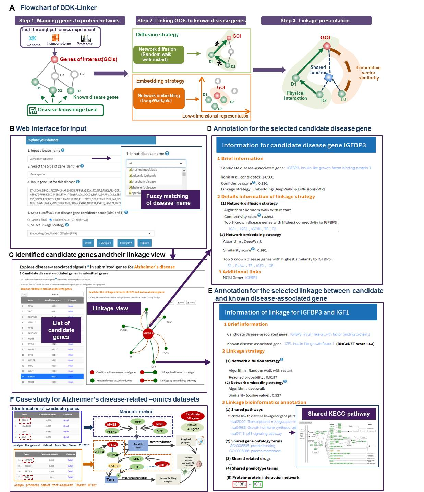

DDK-Linker Documentation Page
The documentation page provides various help, advice, and interpretation of the various inputs and outputs on the DDK-Linker webserver.
1 Overview of DDK-Linker
1.1 The significance of DDK-Linker
1.2 What is disease signal?
Disease signals are the most promising, biologically plausible and disease-associated genes in high-throughput disease -omics experimental data. (Genome Biol 2022, 23: 61; Genome Med 2019, 11: 59; Bioinformatics 2015, 31: 2591)
High-throughput experimental approaches such as gene expression microarrays or quantitative proteomics allow researchers to measure thousands of genes, generating hundreds of genes of interest ( GOIs, such as differentially expressed genes/proteins). However, researchers usually select only several genes ( disease signals) for further disease mechanism and drug discovery. Identifying these most valuable and informative disease signals from the massive -omics data is still a great challenge for the current biomedical community.
1.3 What is GOI?
Abbreviation for "Genes Of Interest". Genes of interest(GOIs) were often obtained from ‘-omics’ raw data after differential expression analysis, gene co-expression analysis, etc.
1.4 Motivation of DDK-Linker
High-throughput experimental approaches such as gene expression microarrays or quantitative proteomics allow researchers to measure thousands of genes, providing deep insight into complex pathological processes. Routine bioinformatics analysis often generates hundreds of genes of interest (GOIs, such as differentially expressed genes/proteins). However, researchers usually want to select only several genes (disease signals) for further disease mechanism and drug discovery. Identifying these most valuable and informative disease signals from the massive -omics data is still a great challenge for the current biomedical community.
Network-based linkage algorithms have been successfully utilized to identify associations between disease and genes. However, there is still no web server applying these algorithms to analyze omics data for exploring the disease signals associated with known disease genes.
Here, to address this challenge, we provided DDK-Linker to facilitate the exploration of disease signals in high-throughput screening. Based on seven well-recognized network analysis algorithms, DDK-Linker presents candidate disease genes and their linkages to disease knowledge, which is promising to become a routine bioinformatics tool for the disease -omics experiments (Figure 1A).
Firstly, web interfaces were designed to accept the user-designated disease name and the related GOIs. User can select parameters, such as disease gene confidence and network analysis algorithms (Figure 1B).
Then, the selected network analysis algorithms were implemented to find the linkages between GOIs and disease genes knowledge (Figure 1C).
Finally, detailed information pages were developed to illustrate linkages between the candidate disease genes and known disease genes, and also to show their abundant bioinformatics annotation, such as shared GO/KEGG terms (Figure 1D, E).
To show the usage of DDK-Linker, we analyzed two datasets from GWAS and proteomic datasets for Alzheimer's disease (Figure 1F).

1.5 Human diseases in DDK-Linker
Currently DDK-linker can analyze 2006 diseases.All these 2006 diseases included in DDK-Linker have at least one known disease-associated gene with DisGeNET score greater than 0.3.
| Disease categories | Disease number |
|---|---|
| Nervous system disease | 610 |
| Cancer | 243 |
| Musculoskeletal system disease | 170 |
| Cardiovascular system disease | 141 |
| Inherited metabolic disorder | 100 |
| Endocrine system disease | 70 |
| Gastrointestinal system disease | 70 |
| Integumentary system disease | 68 |
| Immune system disease | 49 |
| Hematopoietic system disease | 48 |
| Urinary system disease | 46 |
| Benign neoplasm | 39 |
| Respiratory system disease | 32 |
| Cognitive disorder | 28 |
| Bardet-Biedl syndrome | 20 |
| Developmental disorder of mental health | 19 |
| Usher syndrome | 18 |
| RASopathy | 16 |
| Reproductive system disease | 16 |
| Other disesaes | 203 |
| Total | 2006 |
1.6 Network-based algorithms
DDK-Linker provides two categories of well-recognized network-based algorithms to identify disease-associated signals, including 1 network diffusion algorithm and 5 network embedding algorithms. All seven algorithms have been well-recognized by the community, and have been successfully to used to link the disease and genes.
All seven algorithms in DDK-Linker were well-recognized, which have been cited for thousands of times.
| Linkage algorithms | Reference | Google scholar Citation |
|---|---|---|
| RWR diffusion algorithm | Am J Hum Genet. 2008; 82:949. | 1235 |
| LINE embedding algorithm | Proceedings of the 24th International Conference on World Wide Web, Florence, Italy, pp. 1067–1077. ACM. | 5115 |
| Deepwalk embedding algorithm | Proceedings of the 20th ACM SIGKDD International Conference on Knowledge Discovery and Data Mining, New York, NY, pp. 701–710. ACM. | 8532 |
| Node2vec embedding algorithm | Proceedings of the 22nd ACM SIGKDD International Conference on Knowledge Discovery and Data Mining, San Francisco, CA, pp. 855–864. ACM | 8942 |
| HOPE embedding algorithm | Proceedings of the 22nd ACM SIGKDD International Conference on Knowledge Discovery and Data Mining, San Francisco, CA, pp. 1105–1114. ACM. | 1196 |
| Laplacian embedding algorithm | Neural Comput. 2003; 15:1373. | 8960 |
| Linkage algorithms | Case study | ||
| Linkage detail | Disease | Reference | |
| RWR diffusion algorithm | 36 disease-related genes were identified and 21 of these 36 genes were supported by previous experiments. | proliferative diabetic retinopathy (PDR) | Biochim Biophys Acta Mol Basis Dis. 2018; 1864: 2369. |
| LINE embedding algorithm | LINE shows certain efficacy in the task of identifying multiple sclerosis-related genes. | multiple sclerosis | Front Genet. 2020; 11:328 |
| Deepwalk embedding algorithm | This method shows excellent performance for 22 complex diseases, with AUROC ranging from 0.805 to 0.937 (five-fold cross-validation). | 22 complex diseases | IEEE Access 2017; 5: 24032. |
| Node2vec embedding algorithm | 6 of top 10 genes (linked to Parkinson's disease by this algorithm) can be verified by literature. | Parkinson's disease | Front Genet. 2019; 10:226 |
| HOPE embedding algorithm | 9 of top 15 lung cancer disease-related lncRNAs were confirmed by literature. | lung cancer | Mol Ther Nucleic Acids. 2020; 23:277. |
| Laplacian embedding algorithm | Performance of the disease related miRNA prediction: 0.925(AUROC). | 314 diseases from HMDD | BMC Bioinformatics. 2019; 20:468. |
All the seven algorithms in DDK-Linker have been successfully utilized to discover associations between disease and gene products. However, there is still no web server applying these algorithms to analyze omics data for exploring the disease signals associated with known disease genes. This greatly affects the application of these algorithms in the current field of life omics. DDK-Linker is supposed to greatly accelerate the speed of disease -omics data mining. And we hope DDK-Linker can become a routine bioinformatics pipeline, and gain wide usage.
The following are the details of these algorithms.
1.6.1 RWR (Random walk with restart) diffusion algorithm
The diffusion methods employ random walk techniques for influence propagation in protein-protein interaction networks. In the current version of DDK-linker, RWR (Random walk with restart) algorithm was used, which is the state-of-the-art guilt-by-association approach. It explores the network vicinity of gene/protein seeds to study their functions, based on the premise that nodes related to similar functions tend to lie close to each other in the networks. Starting from known disease genes (seeds), they diffuse along the biological network through random walks. It is defined as follows:
pt+1 = (1 − r)Wpt + rp0 ,
where W is the column-wise normalized adjacency matrix of the network. In particular, pt is the probability vector of being at node i at time step t in its i-th entry and p0 is the initial probability vector holding the probabilities of being at known disease nodes (seeds). A proximity measure from every network node to the seed(s) can be calculated by RWR, then according to the proximity measure value, we can obtain a rank of candidate genes for the query disease.
For a candidate gene with a rank k, a scaled rank was calculated as follows:
Scaled rank=k/N,
The connectivity score was calculated as follows:
Connectivity score=1- n/N,
where k represents the rank of candidate gene, N represents the number of all candidate gene in network. A scaled rank ranges from 1/n to 1. A higher connectivity score means that the corresponding gene is more likely to relate to the disease.
The RWR algorithm we used has been cited for 1235 times, and has been successfully.
1.6.2 Five network embedding algorithms
These algorithms identify the potential disease-associated genes based on their embedding vectors’ similarity (cosine value) with those of known disease genes in protein-protein interaction network.
In the current version of DDK-Linker, three categories of embedding algorithms are used to create embedding vectors.
- Matrix factorization-based methods: Laplacian, HOPE;
- Random walk-based methods: DeepWalk, node2vec;
- Neural network-based methods: LINE.
As used in references,after creating low dimensional embedding vectors of genes (the known disease-associated gene Vk and the candidate gene node Vg), the similarities between vectors of known disease-associated genes and vectors of candidate genes were calculated.
Similarity(Vg, Vk)= cos(Vg, Vk)
By calculating and sorting the similarities, then a rank of candidate genes for the query disease was obtained.
For a candidate gene with a rank k, a scaled rank was calculated as follows:
Scaled rank=k/N,
the similarity score was calculated as follows:
Similarity score=1- n/N
where k represents the rank of candidate gene, N represents the number of all candidate genes in network.A scaled rank ranges from 1/n to 1. A higher connectivity score means that the corresponding gene is more likely to relate to the disease.
1.6.3 Mean rank and Top rank of candidate genes
If the user selects two or more algorithms for analysis, the sets of candidate gene ranks obtained by different algorithms will be presented together with the MeanRank and TopRank (Nucleic Acids Research, 47,W212–W224). For MeanRank, the mean rank of each candidate gene across candidate gene containing that candidate gene is the score by which a composite list of candidate genes is re-ranked. For TopRank, we take the maximum scaled rank assigned to each candidate gene across all algorithms and re-rank to generate a composite ranking.
1.7 Data source of disease-gene association
We obtained the disease-gene association from DisGeNET. DisGeNET(Nucleic Acids Res, 48:D845) is a high-confidence database of gene-disease associations. DisGeNET defines a gene-disease association score(DisGeNET score, range from 0 to 1) to evaluate the confidence of gene-disease associations.
In DDK-Linker, user can customize a cutoff value to select genes as known disease-associated genes which are used in the linkage algorithms. See 2.4 Set a cut off value of disease gene confidence score
1.8 Data source of protein-protein interaction network
We select protein-protein interaction network HPRD as background network in DDK-Linker. HPRD (8827 genes, 34405 edges). This network is a manually curated network and widely used by the scientific community. The edges in the network are only from verified experimental results.
2 Input
2.1 Disease name
Users can designate one disease by providing its name in Disease Ontology.An embedded plug-in can help users select the disease name by approximate string matching. Users could input a disease name directly, and DDK-Linker can help users match the standard disease name by approximate string matching.

2.2 Select gene identifier type
DDK-Linker supports the submission of two types of gene identifier types: NCBI Entrez Gene ID and Gene Symbol, which were widely used by the community.
2.3 Input gene list
Genes of interest were often obtained from ‘-omics’ raw data after differentially expression analysis, gene co-expression analysis, etc.[ Genome Biol. 2007;8(1):R3 ]. Users could directly paste the gene list (each gene in each line, or genes separated by comma). If you want to submit more than 2000 genes each time, please kindly e-mail us by lidong.bprc@foxmail.com before submission.
2.4 Set DisGeNET score for seed genes in DDK-Linker algorithms
In DDK-Linker, seven well-recognized algorithms discover potential disease signals in high-throughput omics data by calculating the linking genes of interest to disease seed genes.
Known disease-associated genes were considered as seed genes in previous published works. (Bioinformatics 35:497–505; Briefings in Bioinformatics, 22(4), 1-15).
We obtained the disease-gene association from DisGeNET. DisGeNET(Nucleic Acids Res 2020, 48:D845) is a high-confidence database of gene-disease associations. DisGeNET defines a gene-disease association score(DisGeNET score, range from 0 to 1) to evaluate the confidence of gene-disease associations.
We provide two options for setting seed genes by DisGeNET score(as Reactome overlay defined):
- Medium(>0.3): Known diseases-associated genes with DisGeNET score greater than 0.3 will be defined as seed genes, and be used in the subsequent linkage algorithm.
- High(>0.6): Known diseases-associated genes with DisGeNET score greater than 0.6 will be defined as seed genes, and be used in the subsequent linkage algorithm.
2.5 Select one or more linkage algorithms
Users can select one or more linkage algorithms to link known disease gene. See Network-based approaches for details
2.6 Example datasets
Two example datasets are provided in the current version of DDK-Linker.
Datasets of "Example 1" is the genes list(patients with AD vs healthy controls) from genome(GWAS) experiment( Nat Genet.53(12):1722).
Datasets of "Example 2" load different expression genes list (patients with AD vs healthy controls) from proteomic experiment( Alzheimers Dement.88-102).

Click the "Explore" button on the home page to generate the result page.
3 Output
After submitting, DDK-Linker performs the linkage analysis to discover disease-associated signals in submitted genes, presents the list of candidate disease-associated genes in submitted genes(left table) and illustrates their linkages with known disease genes (network view, right panel).
By clicking each node of network, users can view annotations of candidate gene and the corresponding linkages.
In DDK-Linker, disease-associated signals refer to potential disease-associated genes in the gene list from high-throughput screens, or functional associations between the gene list and known disease genes.
3.1 Candidate disease-associated genes in submitted genes
Here we present candidate disease-associated genes identified by DDK-Linker from submitted genes in left table. After clicking on an individual gene in left table, interactive network visualization will be displayed in the right panel. This network view will demonstrate the linkages between known disease genes (green nodes) and the candidate gene(red node).

Known disease-associated genes:Genes with a DisGeNET confidence score greater than the cutoff value (set in the parameter setting section).
#High: The number of disease genes with correlation scores greater than 0.8. Correlation scores greater than 0.8 indicate corresponding genes are very highly related to user designated disease.
#Middle: The number of disease genes with confidence scores between 0.3 and 0.8. Correlation scores between 0.3 and 0.8 indicate genes which can be considered moderately related to diseases.
#Low: The number of disease genes with confidence scores less than 0.3. Correlation scores less than 0.3 indicate genes which have a low correlation.
Click on the central red node (candidate gene) to view a pop-up window for detailed information of the candidate gene.

Connectivity score: Connectivity score between a candidate gene and known disease-associated genes is caculated by RWH algorithm( Bioinformatics.35(3):4970). A higher connectivity score means that the corresponding gene is more likely to relate to the disease.
Similarty score:Similarty score reflects the similarity between a candidate gene and known disease-associated genes. See Network-based approaches.
Click on the green node (known disease gene) to view a pop-up window for detailed information of the linkage between candidate gene and known disease genes.

Linkage bioinformatics annotation: Here five types of bioinformatic annotation between the candidate gene and the known disease-associated gene are presented.
3.2 Known disease-associated genes in submitted genes
Here we present known disease-associated genes in submitted genes

known disease-associated genes: Genes with DisGeNET score greater than cutoff value set in the parameter setting section.